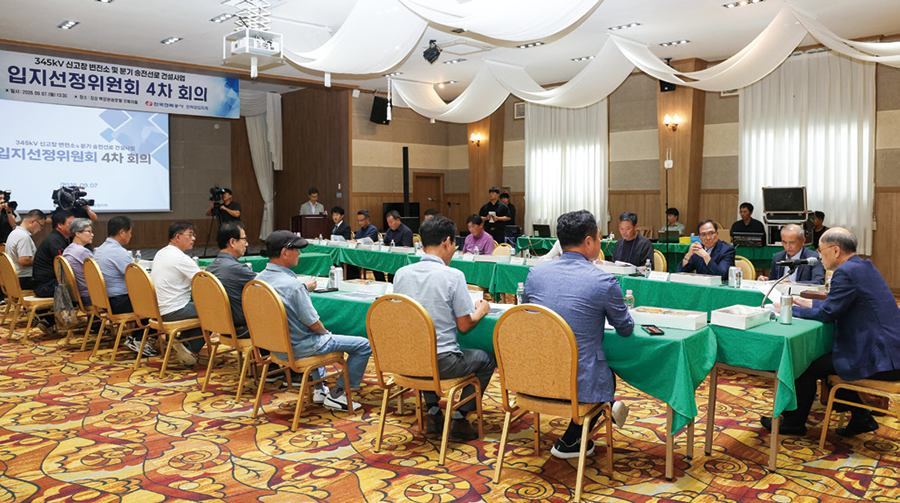
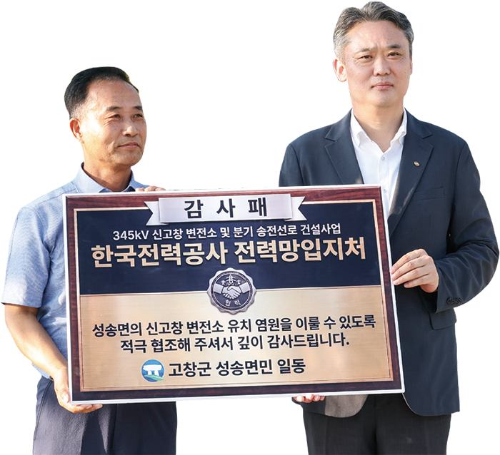

KEPCO NOW · ON SITE
갈등을 넘어 상생으로,
고창 성송면에 밝힌 빛나는 이정표
주민들이 먼저 손들어 유치한 345kV 신고창변전소
3줄 요약
- 호남 재생에너지를 전국 전력망에 잇는 345kV 신고창변전소 사업은 2023년 계획 이후 19개월 넘게 입지선정위원회조차 꾸리지 못했다.
- 전력망입지처 전담팀은 소통 대상을 주민으로 바꿔 22회 설명회를 열고, 3無 시설과 지역 발전 비전을 숨김없이 설명했다.
- 성송면 34개 마을이 만장일치로 유치를 신청했고, 9월 7일 최종 부지로 확정되며 ‘지역 상생형’ 전력망 모델이 됐다.
반대 플래카드 대신 걸린 ‘환영’의 현수막
2026년 9월 7일, 전북 고창군 성송면 종합복지회관 앞에는 눈을 의심케 하는 대형 현수막이 걸렸다.
345kV 신고창변전소 성송면 유치 확정!
보통 전력설비라고 하면 빨간 띠를 두른 반대 현수막이 먼저 떠오르지만, 이곳에는 주민들이 직접 내건 축하 현수막이 환하게 나부끼고 있었다. 다음날 주요 언론사들은 “전기 깔려야 기업 들어오고, 객지 나간 자식도 돌아온다”라며 주민들이 먼저 손을 들고 나선 이 기적 같은 소식을 기획보도로 비중 있게 다루었다.
대형 기피·혐오 시설로 외면받던 변전소를 고창군 성송면 주민들이 만장일치로 유치한 이 사건은, 대한민국 전력망 역사에 길이 남을 반전이자 한전 직원들과 주민들이 함께 만들어낸 값진 승리였다.
숨 가빴던 3년, 꽉 막힌 벽 앞에서 찾아낸 새로운 길
345kV 신고창변전소 사업은 호남 지역의 풍부한 재생에너지를 전국 전력망에 연결하기 위해 한시도 미룰 수 없는 국가적 숙원 사업이었다. 하지만 2023년 계획이 세워진 이후 3년 가까이 거센 난항을 겪었다. 전력설비에 대한 지방정부와 반대대책위의 반대로 주민 대상 설명회를 비롯하여 입지선정위원회조차 구성하지 못하고 19개월 이상 지루한 공방만 이어졌다.
2026년도가 되어 전력망입지처 프로젝트 전담팀 팀원들은 지방정부와 대책위를 수없이 찾아갔지만, 벽은 쉽사리 무너지지 않았다. 이때 사업 담당자는 과감한 결단을 내렸다. 바로 ‘소통 대상의 대전환’이었다. 기존의 지방정부와 반대대책위 중심의 소통에서 벗어나, 지역의 진짜 주인인 지역주민과의 소통을 강화하기 위해 직접 찾아가 가슴으로 다가가기로 한 것이다.
주민의 마음을 연 ‘진정성 있는 발품 소통’
전력망입지처 프로젝트 전담팀 팀원들은 마을의 작은 행사부터 찾아갔다. 지역 행사에 참여하여 건설사업 안내 부스를 만들어 주민 한 분 한 분의 손을 잡고 이야기를 나누었다. 직접 만난 주민들은 변전소 설치를 무조건 반대하는 것이 아니었다. 다만 변전소가 무엇인지, 자신들에게 어떤 영향이 있는지 제대로 된 정보를 들을 기회가 없었을 뿐이었다.
이에, 곧바로 행동에 나섰다. 사업 초기 지방정부 대상 설명회에 그치던 방식을 바꿔, 주민들이 주체가 되어 스스로 판단할 수 있도록 공론화의 판을 크게 깔았다.
주민을 찾아가는 무한 설명회
성송면 주민을 포함한 사업대상지역에서 총 22회에 달하는 전방위적인 설명회를 개최했다. “원하시는 곳이라면 주민 단 한 분을 위해서라도 달려가겠다”라는 담당자의 진심 어린 발품이 단단했던 오해의 빗장을 열기 시작했다.
불안을 안심으로 바꾼 3無 약속
2026년 4월 10일, 성송면 이장단의 요청으로 열린 설명회에서 변전소의 기능과 필요성은 물론, 기업 유치와 일자리 창출, 재생에너지 확대 등 지역에 미치는 긍정적인 효과 및 전자파 등에 대한 객관적 데이터 등 주민들이 정말 궁금해하는 질문에 숨김없이 답했다. 성송면 주민들은 과거 개발사업으로 인한 피해와 주민 생존권을 위협받아 왔지만, 이에 비해 변전소는 3無 시설(무취, 무소음, 무비산먼지)이라는 점에 주목하였다.
희망의 비전 제시
고창군 내에서도 상대적으로 소외되어 지역 소멸위기를 겪던 성송면 주민들의 애환에 깊이 공감했다. 특히 “변전소가 생기면 AI 등 미래 산업과 기업을 유치할 기반이 생기고, 지역 발전과 새로운 수익 창출을 지원하는 핵심 인프라로서 마을을 살릴 수 있다”라는 현실적인 희망으로 변전소를 바라보았다. 밤낮없이 마을 회관을 누비며 주민들과 막걸릿잔을 기울이고 청렴하고 진솔하게 다가선 담당자들의 진심에, 주민들은 마침내 고개를 끄덕이기 시작했다.
34개 마을 만장일치, 유치 희망 공문 전달식
“전기가 돌아야 우리 마을에 일터가 생기고 청년이 돌아온다!” 주민들의 생각이 바뀌자, 일은 일사천리로 진행되었다. 2026년 8월 고창군 성송면 여론 주도층이 뜻을 모아 ‘성송면 유치위원회’를 공식 결성했다. 8월 7일 열린 성송면 전체 주민 대토론회에서 유치위원회는 갈등을 숨기거나 반대 측을 배제하지 않았다. 마을 이장단과 함께 반대대책위까지 모두 모아 무려 300여 명의 주민들이 보는 앞에서 열띤 토론을 벌였다.
이어진 유치 동의서 서명운동은 유치위원회와 34개 마을 이장님의 헌신적인 발품으로 열기를 더했다. 반대하는 이웃을 찾아가 밤새 설득한 끝에 성송면 34개 전체 마을 만장일치로 유치 신청을 하였고, 전체 세대 중 80%, 실거주 주민 중 95% 이상 유치 희망으로 압도적이고 기적 같은 결과를 만들어냈다.
2026년 8월 21일, 제3차 입지선정위원회 회의장. 성송면 주민들은 직접 작성한 유치 희망 동의서와 ‘유치 희망 요청 공문서’를 한전에 공식 전달했다. 회의장 앞에 모여 밝은 표정으로 유치를 응원하는 주민들의 모습을 본 위원들은 감동과 함께 만장일치로 고창군 성송면을 단일 후보 부지로 의결했다. 그리고 최종적으로 9월 7일, 입지선정위원회 4차 회의에서 고창군 성송면에 최종 변전소 부지 확정을 공식 발표하며 3년간의 위대한 여정이 열매를 맺었다.

전력망 건설의 새로운 대전환점을 쓰다
이번 성송면 변전소 자발적 유치는 언론의 평가대로 전력산업 역사상 보기 드문 “지역 상생형 성공 모델”이며, 전력설비를 바라보는 지역사회의 인식 변화로도 이어졌다. 국가기간 전력망의 연계 송전선로 사업에서도 지역 주민들의 유치 시그널이 이어지는 등 긍정적인 파급효과가 나타나고 있으며, 지역과 상생하는 전력망 모델로 재조명되었다.
약속을 지키는 한전, 함께 밝히는 미래
국가기간 전력망의 필요성에 공감하고 지역의 미래를 위해 뜻을 모아주신 성송면 주민들께 깊은 감사의 말씀을 드리며, 이번 사례가 지역과 국가가 함께 발전할 수 있는 전력망 구축의 좋은 사례가 되기를 기대한다.

주민들의 차가운 시선과 오해를 신뢰로 바꾼 것은 현장에서 발로 뛴 전력망입지처 프로젝트 전담팀 팀원들의 땀방울이었다. 그리고 그 진심에 응답해 준 것은 지역의 미래를 깊이 고민한 성송면 주민들의 지혜였다. 주민들과의 약속을 가슴 깊이 새기며, 한전은 앞으로도 고창군 성송면과 함께 대한민국 전력망의 환한 미래를 힘차게 열어갈 것이다.